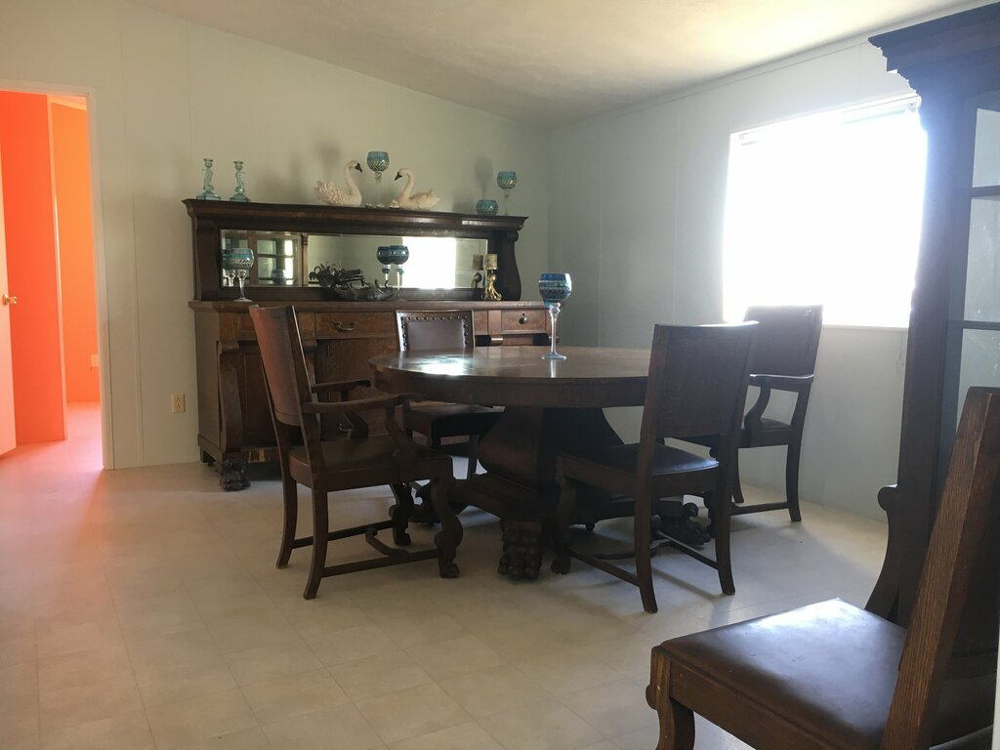

Calcolo numerico per la generazione di immagini fotorealistiche
Maurizio Tomasi maurizio.tomasi@unimi.it
Il valore «neutro» per la radianza è definito dalla media logaritmica della luminosità l_i dei pixel (con i = 1\ldots N): \left<l\right> = 10^{\frac{\sum_i \log_{10}(\delta + l_i)}N}, dove \delta \ll 1 evita la singolarità di \log_{10} x in x = 0.
A ciascun pixel sono però associati tre valori scalari (R, G, B). Quale valore usare per la luminosità l_i?
Shirley & Morley usano l’ultima definizione perché sostengono che, nonostante non sia fisicamente significativa, produca risultati visivamente migliori.
Non abbiamo ancora giustificato la formula \left<l\right> = 10^{\frac{\sum_i \log_{10}(\delta + l_i)}N},
Essa è plausibile perché la risposta dell’occhio a uno stimolo S è logaritmica (leggi di Weber-Fechner): p = k \log_{10} \frac{S}{S_0} dove p è il valore percepito, e S è l’intensità dello stimolo.
La media logaritmica è una media sugli esponenti, mentre la media aritmetica è una media sui valori;
Nel caso i valori siano 10^2, 10^4 e 10^6, la media logaritmica è 10^{\frac{\log_{10} 10^2 + \log_{10} 10^4 + \log_{10} 10^6}3} = 10^4, mentre la media aritmetica è (10^2 + 10^4 + 10^6)/3 \approx 10^6/3.
Una volta stimato il valore medio, i valori R, G, B dell’immagine sono aggiornati tramite la trasformazione
R_i \rightarrow a \times \frac{R_i}{\left<l\right>},
dove a è un valore impostabile dall’utente.
Curiosamente, nel loro libro Shirley & Morley suggeriscono a = 0.18; in realtà non esiste un valore «giusto», e a si deve scegliere a seconda dell’immagine.

Sono notoriamente difficili da trattare!
Shirley & Morley suggeriscono di applicare ai valori R, G, B di ogni punto dell’immagine la trasformazione R_i \rightarrow \frac{R_i}{1 + R_i}, che ha le seguenti caratteristiche: \begin{aligned} R_i \ll 1 &\Rightarrow R_i \rightarrow R_i,\\ R_i \gg 1 &\Rightarrow R_i \rightarrow 1. \end{aligned}
Potremmo voler applicare una correzione γ ai valori dell’immagine.
Se in corrispondenza di un segnale x il monitor emette un flusso
\Phi \propto x^\gamma,
allora i valori RGB da salvare nell’immagine LDR devono essere
r = \left[2^8\times R^{1/\gamma}\right],\quad g = \left[2^8\times G^{1/\gamma}\right],\quad b = \left[2^8\times B^{1/\gamma}\right],
assumendo che il formato codifichi i colori usando 8×3 = 24 bit.
Oggi implementeremo il codice del nostro programma (main.py nella versione Python).
Il funzionamento del programma in questa versione sarà il seguente:
$ ./main.py input_file.pfm 0.3 1.0 output_file.png
File 'input_file.pfm' has been read from disk
File 'output_file.png' has been written to disk
$Lo scopo è quello di convertire un file PFM in un file PNG (o nel formato LDR che preferite). I valori 0.3 e 1.0 fanno riferimento al fattore di scala a e a \gamma, rispettivamente.
Le attività da compiere sul codice sono le seguenti:
Color;HdrImage;HdrImage usando una certa luminosità media, opzionalmente passata come argomento;main nel codice dell’applicazione.Come al solito, fornisco un’implementazione di riferimento in Python nel repository pytracer.
Aggiungiamo un semplice metodo luminosity alla classe Color, che restituisce il valore della luminosità suggerito da Shirley & Morley:
Se nel vostro linguaggio l’equivalente di max e min accetta solo due parametri (es., minOf e maxOf in Kotlin), potete usare l’equivalenza
\max\left\{a, b, c\right\} \equiv \max\bigl\{\max\left\{a, b\right\}, c\bigr\}.
Occorrono anche alcuni test per Color.luminosity:
Il metodo pytest.approx() fa parte della libreria pytest, e corrisponde alla funzione is_close che avete implementato tempo fa.
La funzione normalize_image calcola la luminosità media di un’immagine secondo l’equazione corrispondente.
La funzione dovrebbe accettare il valore di a come parametro di input:
È bene accettare la luminosità come parametro anziché calcolarla:
Se il vostro linguaggio supporta i tipi opzionali, potete chiamare la funzione average_luminosity se il parametro luminosità è nullo:
def test_normalize_image():
img = HdrImage(2, 1)
img.set_pixel(0, 0, Color( 5.0, 10.0, 15.0))
img.set_pixel(1, 0, Color(500.0, 1000.0, 1500.0))
img.normalize_image(factor=1000.0, luminosity=100.0)
assert img.get_pixel(0, 0).is_close(Color(0.5e2, 1.0e2, 1.5e2))
assert img.get_pixel(1, 0).is_close(Color(0.5e4, 1.0e4, 1.5e4))def test_clamp_image():
img = HdrImage(2, 1)
img.set_pixel(0, 0, Color(0.5e1, 1.0e1, 1.5e1))
img.set_pixel(1, 0, Color(0.5e3, 1.0e3, 1.5e3))
img.clamp_image()
# Just check that the R/G/B values are within the expected boundaries
for cur_pixel in img.pixels:
assert (cur_pixel.r >= 0) and (cur_pixel.r <= 1)
assert (cur_pixel.g >= 0) and (cur_pixel.g <= 1)
assert (cur_pixel.b >= 0) and (cur_pixel.b <= 1)normalize_image e clamp_image, tutte le componenti RGB dei colori nella matrice saranno nell’intervallo [0, 1].| Linguaggio | Librerie |
|---|---|
| C++ | libpng, libjpeg, libjpeg-turbo libtiff, webp, libgd |
| Kotlin | javax.imageio (già installato) |
| Julia | Images.jl + ImageIO.jl |
| C# | ImageSharp |
| Python | Pillow |
class HdrImage:
# ...
def write_ldr_image(self, stream, format, gamma=1.0):
from PIL import Image
img = Image.new("RGB", (self.width, self.height))
for y in range(self.height):
for x in range(self.width):
cur_color = self.get_pixel(x, y)
img.putpixel(xy=(x, y), value=(
int(255 * math.pow(cur_color.r, 1 / gamma)),
int(255 * math.pow(cur_color.g, 1 / gamma)),
int(255 * math.pow(cur_color.b, 1 / gamma)),
))
img.save(stream, format=format)main (1/2)from dataclasses import dataclass
@dataclass
class Parameters:
input_pfm_file_name: str = ""
factor:float = 0.2
gamma:float = 1.0
output_png_file_name: str = ""
def parse_command_line(self, argv):
if len(sys.argv) != 5:
raise RuntimeError("Usage: main.py INPUT_PFM_FILE FACTOR GAMMA OUTPUT_PNG_FILE")
self.input_pfm_file_name = sys.argv[1]
try:
self.factor = float(sys.argv[2])
except ValueError:
raise RuntimeError(f"Invalid factor ('{sys.argv[2]}'), it must be a floating-point number.")
try:
self.gamma = float(sys.argv[3])
except ValueError:
raise RuntimeError(f"Invalid gamma ('{sys.argv[3]}'), it must be a floating-point number.")
self.output_png_file_name = sys.argv[4]main (2/2)def main(argv):
parameters = Parameters()
try:
parameters.parse_command_line(argv)
except RuntimeError as err:
print("Error: ", err)
return
with open(parameters.input_pfm_file_name, "rb") as inpf:
img = hdrimages.read_pfm_image(inpf)
print(f"File {parameters.input_pfm_file_name} has been read from disk.")
img.normalize_image(factor=parameters.factor)
img.clamp_image()
with open(parameters.output_png_file_name, "wb") as outf:
img.write_ldr_image(stream=outf, format="PNG", gamma=parameters.gamma)
print(f"File {parameters.output_png_file_name} has been written to disk.")Useremo il solito link: gather.town/app/CgOtJvyNfVKMIQ9e/LaboratorioRayTracing
Color;HdrImage;HdrImage usando una certa luminosità media, opzionalmente passata come argomento;main nel codice dell’applicazione, in modo che accetti 4 argomenti: il file PFM da leggere, il valore di a, il valore di γ, e il nome del file PNG/JPEG/etc. da creare.Se vi serve un’immagine PFM realistica, potete usare memorial.pfm.
libgdTra tutte le librerie C/C++ consigliate (libpng, libjpeg, libjpeg-turbo, libtiff, webp, libgd), libgd è la più semplice e versatile.
Su sistemi Ubuntu si può installare con
sudo apt install libgd-devPotrebbe non essere semplice installarla sotto Windows…
Supporta il salvataggio di immagini sia in formato PNG che JPEG.
Supporta pkg-config:
gcc -o main main.c $(pkg-config --cflags --libs gdlib)libgd#include "gd.h" /* The library's header file */
#include <stdio.h>
int main() {
const int width = 256, height = 256;
gdImagePtr im;
FILE *f;
int row, col;
// "True color" is the old name for 24-bit RGB images
im = gdImageCreateTrueColor(width, height);
for(row = 0; row < height; ++row) {
for(col = 0; col < width; ++col) {
int red, green, blue = 128;
red = (int) (col * 255.0 / width);
green = (int) ((1.0 - row * 1.0 / height) * 255.0);
gdImageSetPixel(im, col, row, gdImageColorExact(im, red, green, blue));
}
}
f = fopen("image.png", "wb");
/* Output the image to the disk file in PNG format. */
gdImagePng(im, f); /* gdImageJpeg(im, jpegout, -1); */
fclose(f);
gdImageDestroy(im);
}Se non riuscite ad usare libgd, potete tentare con qualcuna delle altre librerie.
Il sito Awesome C++ ha una sezione dedicata alle librerie grafiche per C++ che elenca molte possibilità.
La libreria ImageSharp supporta molti formati: JPEG, PNG, BMP, GIF, e TGA (un vecchio formato che non abbiamo trattato nella lezione di teoria).
In C# si possono scaricare e installare automaticamente librerie, e specificare che vanno impiegate nei propri progetti senza bisogno di modificare Makefile e di usare root-config, pkg-config e cose simili.
Aggiungete il package SixLabors.ImageSharp alla libreria di classi (che forse avete chiamato Tracer):
$ dotnet add package SixLabors.ImageSharp// Create a sRGB bitmap
var bitmap = new Image<Rgb24>(Configuration.Default, width, height);
// The bitmap can be used as a matrix. To draw the pixels in the bitmap
// just use the syntax "bitmap[x, y]" like the following:
bitmap[SOMEX, SOMEY] = new Rgb24(255, 255, 128); // Three "Byte" values!
// Save the bitmap as a PNG file
using (Stream fileStream = File.OpenWrite("output.png")) {
bitmap.Save(fileStream, new PngEncoder());
}Image.Usando Pkg.add, installate nel vostro package sia Image che ImageIO.
A questo punto basta creare matrici di valori RGB e salvarle col comando save; l’estensione del file ne determina il formato:
A differenza di Python, C++, C# e Julia, il linguaggio Kotlin fornisce supporto per immagini PNG, JPEG, BMP e GIF tramite le librerie standard Java.
A voi servono le classi java.awt.image.BufferedImage (immagine LDR) e javax.imageio.ImageIO (la classe che implementa i metodi per leggere/scrivere immagini LDR su file).
La classe BufferedImage permette di codificare il colore in tanti modi diversi. Se usate TYPE_INT_RGB, il colore è un numero intero a 32 bit anziché una terna RGB.
I 32 bit del numero che codifica un colore seguono questo formato:
00000000 rrrrrrrr gggggggg bbbbbbbbdove r sono i bit del rosso, g quelli del verde e b quelli del blu. Di solito i colori si indicano usando la notazione esadecimale, perché in questo modo sono sempre a sei cifre, ad es. 0x12FA51.
Se r, g e b sono byte nell’intervallo [0, 255], potete usare la formula r * 65536 + g * 256 + b oppure (r shl 24) + (g shl 8) + b.
fun main(args: Array<String>) {
val width = 800
val height = 600
val ldrImage = BufferedImage(width, height, BufferedImage.TYPE_INT_RGB)
for (y in 0 until height) {
for (x in 0 until width) {
// 0xFF0000 corresponds to sRGB(255, 0, 0): the image will be
// painted uniformly with a bright red shade
ldrImage.setRGB(x, y, 0xFF0000)
}
}
// Save the image to the file specified on the command line
ImageIO.write(args[0], "PNG", stream)
}Kotlin deriva da Java, ed ha ereditato il suo modo un po’ «barocco» di gestire i parametri da linea di comando.
Il vostro eseguibile Kotlin non può essere eseguito come un normale eseguibile Python/C++/C#:
$ ./main.py input_file.pfm 0.3 1.0 output_file.pngperché bisogna passare da gradlew, che richiede che i parametri siano passati attraverso --args:
./gradlew run --args="input_file.pfm 0.3 1.0 output_file.png"